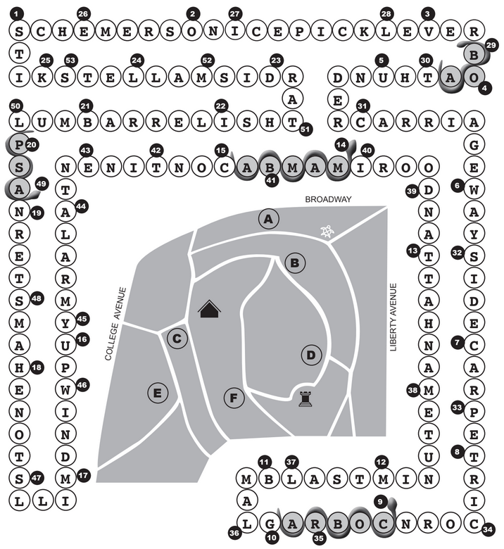

A Walk in the Park Solution
by Julia Tenney
Enter the answers to each clue in the grid, starting in the correspondingly-numbered space and ending in the space before the next consecutive number. The chain of answer words will overlap itself, winding their way twice around the serpentine path. Some of the words are used clued using information from Powderhouse Park, which can be found at the marked spaces on the map. There are two unclued words in the grid - PICKLE and RELISH. Combining these give the answer PICKLE RELISH

- Plotters (8) - SCHEMERS
- Chilling (2 3) - ON ICE
- Action word (4) - VERB
- Solemn swear (4) - OATH
- Chassis (13) - UNDERCARRIAGE
- Longfellow's tavern (7) - WAYSIDE
- "__ diem!" (5) - CARPE
- Item depicted in bronze near F (7) - TRICORN
- SNAKE! (5) - COBRA
- Early Bowie rock genre (4) - GLAM
- A fun time (5) - BLAST
- Another name for item depicted in bronze near F (9 3) - MINUTEMAN HAT
- Indian cooking style (8) - TANDOORI
- SNAKE! (5) - MAMBA
- Militia who used this powderhouse (11 4) - CONTINENTAL ARMY
- Preferred orientation with a skunk (6) - UPWIND
- Name for artifact near D (9) - MILLSTONE
- Pet rodent (7) - HAMSTER
- Lil _ X (3) - NAS
- Choice or fruit (4) - PLUM
- Cask (6) - BARREL
- Goddess or notable Hollywood flop (6) - ISHTAR
- Grim (6) - DISMAL
- Rents (4) - LETS
- Tacky decor (6) - KITSCH
- Factory owner mentioned near B (7) - EMERSON
- Chipping device (7) - ICE PICK
- Crowbar (5) - LEVER
- SNAKE! (3) - BOA
- Roar (7) - THUNDER
- Word on plaque near C (11) - CARRIAGEWAY
- A drink or motorcycle attachment (7) - SIDECAR
- A type of dish (5) - PETRI
- A type of pipe (7) - CORNCOB
- A cloth (3) - RAG
- Depicted in sculpture near E (4) - LAMB
- Eleventh hour (4 6) - LAST MINUTE
- A drink or borough (9) - MANHATTAN
- Entryway (4) - DOOR
- Mosque figure (4) - IMAM
- Crispy strips (5) - BACON
- Biscuit container (3) - TIN
- Tolkien tree person (3) - ENT
- Siren (5) - ALARM
- "Sure thing" (3) - YUP
- Original use of this powderhouse, mentioned near A (8) - WINDMILL
- Town on the other side of Medford (8) - STONEHAM
- Aft or not at all lenient (5) - STERN
- SNAKE! (3) - ASP
- Lower back (6) - LUMBAR
- British scifi vehicle (6) - TARDIS
- He built the powderhouse, mentioned near A (6) - MALLET
- Improv scene (4) - SKIT